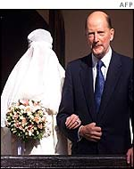
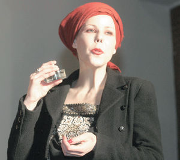

Bugarska hm..princeza
Evo jednog izveštaja iz Bugarske, od pre nekoliko dana.
A sad nešto drugo.
***
Beba se rodila i zvaće se Simeon.
Poenta je da se Kalina, ćerka Simeona Sakskoburgotskog, pre drugog svetskog rata bugarskog
monarha, a početkom ovog veka bugarskog premijera, porodila juče u Sofiji, rodila sina i nazvala ga po dedi.
Ne znam da li bi smo na ovu temu mogli da pravimo paralele, jer Simeon očigledno ima drugi pristup od prestolonaslednika Aleksandra (odnosno, kako kažu, mnogo ispravnije, pretendenta
na - nepostojeći - presto), pošto je napravio partiju i actually postao premijer u jednom periodu, vrlo važnom, kad su još bili kandidati za članstvo u EU. Ono što sam shvatila čitajući površno štampu na tu temu jeste da je bio dosta solidan premijer.
Druga razlika je ta da su Aleksandrovi sinovi da li još mladi ili nezainteresovani preterano za boravak u Srbiji, nisu se još ni venčali (mislim) te ih sve u svemu i nema mnogo u medijima, dok su im otac i supruga mu suviše neatraktivni za neko intenzivnije praćenje na trač stranama.
Jer, šta? Medijska pažnja koja se u Bugarskoj poklanja Kalini je praktično neuporediva sa bilo čime što smo mi iskusili. Na primer, kad se 2002. udala za španskog pomorca i 'avanturistu', svadba je održana u Bugarskoj. Prenos je uživo išao bar na jednoj TV stanici sa nacionalnom frekvencijom, a o trodnevnom venčanju su opštirno izveštavale sve privatne i kablovske TV kuće, kao i nacionalna televizija. Njen otac je u to vreme bio premijer.
Različita izdanja bugarksih medija na engleskom izvestili su tada sve (ali bukvalno sve) o svakom i najmanjem detalju: Ko je radio haljinu i dodatke, šta se posle desilo sa haljinom, šta je na ceremoniji rečeno na španskom, šta na bugarskom, sve o muzici, suzama roditelja, meniju, pozivnicama, medenom mesecu, poklonima.
I tako. Srećan par, za koga su bugarske proročice rekle da je idealan i da je avanturista koji je i Uneskov ambasador dobre volje idealan za kalinu, živi u Španiji, ali je rešio da se beba rodi u Sofiji, to je bilo juče, akcije će tek krenuti, kažu da i srećana majka i deda imaju iznenađenja za narod ovim povodom, šta će to biti, ne zna se još...
Uglavnom, upoznajmo region, da bi smo ga više voleli.
p.s. Na svadbenom meniju bile su palačinke sa borovnicama, omiljeni dezert mladenaca. Ja bih
to tako rado probala...
Komentari
omg, nista od ovog nisam znala (osim da im je ex princ postao premijer na regularan nacin), omg!
feisty | 16.03.07 04:02
 RSS feed
RSS feed
 sadržaji se objavljuju pod
sadržaji se objavljuju pod
Pa mi u stvari i ne znamo onda šta je medijska tortura venčanja, jel! Osim onih svadbetina...znaš već
vajarka | 15.03.07 18:16